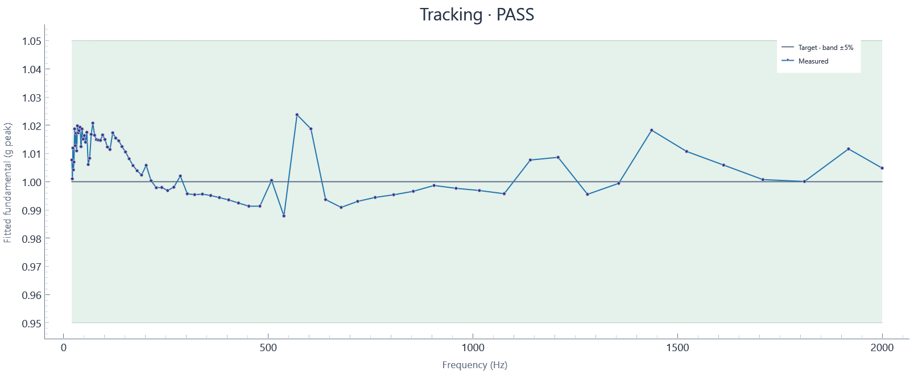

2026-10-30T10:34:23.046660-04:00 · Hardware · Setup 0de5fdcc7090
Run: complete · 409 blocks · 409.40 wall seconds · 409.00 sample seconds
Tracking tolerance: ±5%

| Hz | Target g peak | Settled g peak | Error % | Raw transient peak g | Result |
|---|---|---|---|---|---|
| 20 | 1 | 1.0077 | +0.771 | 1.0572 | PASS |
| 21.189 | 1 | 1.001 | +0.102 | 1.1547 | PASS |
| 22.449 | 1 | 1.0119 | +1.193 | 1.1542 | PASS |
| 23.784 | 1 | 1.0042 | +0.419 | 1.1561 | PASS |
| 25.198 | 1 | 1.007 | +0.695 | 1.1494 | PASS |
| 26.697 | 1 | 1.0187 | +1.871 | 1.1579 | PASS |
| 28.284 | 1 | 1.0128 | +1.279 | 1.1572 | PASS |
| 29.966 | 1 | 1.0172 | +1.717 | 1.1468 | PASS |
| 31.748 | 1 | 1.0109 | +1.093 | 1.1455 | PASS |
| 33.636 | 1 | 1.0198 | +1.981 | 1.1352 | PASS |
| 35.636 | 1 | 1.0173 | +1.734 | 1.1537 | PASS |
| 37.755 | 1 | 1.0181 | +1.811 | 1.1541 | PASS |
| 40 | 1 | 1.0193 | +1.929 | 1.1445 | PASS |
| 42.379 | 1 | 1.0125 | +1.245 | 1.1394 | PASS |
| 44.898 | 1 | 1.0187 | +1.869 | 1.1214 | PASS |
| 47.568 | 1 | 1.0151 | +1.511 | 1.1288 | PASS |
| 50.397 | 1 | 1.0164 | +1.636 | 1.135 | PASS |
| 53.394 | 1 | 1.014 | +1.401 | 1.1345 | PASS |
| 56.569 | 1 | 1.0175 | +1.750 | 1.119 | PASS |
| 59.932 | 1 | 1.0061 | +0.609 | 1.0968 | PASS |
| 63.496 | 1 | 1.0083 | +0.832 | 1.0662 | PASS |
| 67.272 | 1 | 1.0168 | +1.679 | 1.1307 | PASS |
| 71.272 | 1 | 1.0208 | +2.078 | 1.1345 | PASS |
| 75.51 | 1 | 1.0165 | +1.647 | 1.1202 | PASS |
| 80 | 1 | 1.0149 | +1.493 | 1.1235 | PASS |
| 84.757 | 1 | 1.0147 | +1.475 | 1.1188 | PASS |
| 89.797 | 1 | 1.0147 | +1.466 | 1.1013 | PASS |
| 95.137 | 1 | 1.0166 | +1.658 | 1.1203 | PASS |
| 100.79 | 1 | 1.015 | +1.498 | 1.1004 | PASS |
| 106.79 | 1 | 1.0123 | +1.231 | 1.0989 | PASS |
| 113.14 | 1 | 1.0114 | +1.142 | 1.0863 | PASS |
| 119.86 | 1 | 1.0173 | +1.733 | 1.0824 | PASS |
| 126.99 | 1 | 1.0155 | +1.547 | 1.0875 | PASS |
| 134.54 | 1 | 1.0145 | +1.448 | 1.0805 | PASS |
| 142.54 | 1 | 1.0124 | +1.245 | 1.0796 | PASS |
| 151.02 | 1 | 1.0106 | +1.055 | 1.0685 | PASS |
| 160 | 1 | 1.0081 | +0.814 | 1.0706 | PASS |
| 169.51 | 1 | 1.0057 | +0.571 | 1.053 | PASS |
| 179.59 | 1 | 1.0039 | +0.389 | 1.0483 | PASS |
| 190.27 | 1 | 1.0024 | +0.238 | 1.0436 | PASS |
| 201.59 | 1 | 1.0058 | +0.580 | 1.0488 | PASS |
| 213.57 | 1 | 1.0003 | +0.034 | 1.0488 | PASS |
| 226.27 | 1 | 0.99787 | -0.213 | 1.0351 | PASS |
| 239.73 | 1 | 0.99796 | -0.204 | 1.0385 | PASS |
| 253.98 | 1 | 0.99688 | -0.312 | 1.0378 | PASS |
| 269.09 | 1 | 0.99806 | -0.194 | 1.0362 | PASS |
| 285.09 | 1 | 1.002 | +0.202 | 1.0406 | PASS |
| 302.04 | 1 | 0.99572 | -0.428 | 1.0375 | PASS |
| 320 | 1 | 0.99541 | -0.459 | 1.0384 | PASS |
| 339.03 | 1 | 0.99559 | -0.441 | 1.0468 | PASS |
| 359.19 | 1 | 0.99511 | -0.489 | 1.0421 | PASS |
| 380.55 | 1 | 0.99437 | -0.563 | 1.0351 | PASS |
| 403.17 | 1 | 0.99355 | -0.645 | 1.0473 | PASS |
| 427.15 | 1 | 0.99245 | -0.755 | 1.0377 | PASS |
| 452.55 | 1 | 0.99132 | -0.868 | 1.0461 | PASS |
| 479.46 | 1 | 0.99133 | -0.867 | 1.0446 | PASS |
| 507.97 | 1 | 1.0005 | +0.046 | 1.0388 | PASS |
| 538.17 | 1 | 0.98786 | -1.214 | 1.0353 | PASS |
| 570.18 | 1 | 1.0237 | +2.375 | 1.2332 | PASS |
| 604.08 | 1 | 1.0187 | +1.873 | 1.203 | PASS |
| 640 | 1 | 0.99366 | -0.634 | 1.0509 | PASS |
| 678.06 | 1 | 0.9909 | -0.910 | 1.0409 | PASS |
| 718.38 | 1 | 0.99303 | -0.697 | 1.036 | PASS |
| 761.09 | 1 | 0.99443 | -0.557 | 1.0358 | PASS |
| 806.35 | 1 | 0.99537 | -0.463 | 1.0417 | PASS |
| 854.3 | 1 | 0.99659 | -0.341 | 1.0422 | PASS |
| 905.1 | 1 | 0.99867 | -0.133 | 1.0422 | PASS |
| 958.92 | 1 | 0.99766 | -0.234 | 1.041 | PASS |
| 1015.9 | 1 | 0.99688 | -0.312 | 1.0363 | PASS |
| 1076.3 | 1 | 0.99574 | -0.426 | 1.038 | PASS |
| 1140.4 | 1 | 1.0077 | +0.769 | 1.0605 | PASS |
| 1208.2 | 1 | 1.0086 | +0.864 | 1.1215 | PASS |
| 1280 | 1 | 0.99553 | -0.447 | 1.0399 | PASS |
| 1356.1 | 1 | 0.99941 | -0.059 | 1.0411 | PASS |
| 1436.8 | 1 | 1.0182 | +1.824 | 1.0799 | PASS |
| 1522.2 | 1 | 1.0107 | +1.072 | 1.0524 | PASS |
| 1612.7 | 1 | 1.0059 | +0.589 | 1.0425 | PASS |
| 1708.6 | 1 | 1.0007 | +0.075 | 1.0425 | PASS |
| 1810.2 | 1 | 1.0001 | +0.008 | 1.085 | PASS |
| 1917.8 | 1 | 1.0116 | +1.162 | 1.0678 | PASS |
| 2000 | 1 | 1.0048 | +0.482 | 1.0401 | PASS |
Tracking assessment against configured tolerance, separate from run completion. Sine uses the last settling-window blocks at each dwell; transient raw peaks are reported separately. Random excludes startup/ramp and the initial settling interval; all subsequent full-target blocks are evaluated.
Raw peak means the largest absolute acquired sample; it differs from fitted sine amplitude and RMS.
Calibration: 2026-10-29 current shaker/amp/load; NI USB-4431 Dev1 ai0, 10 mV/g, 2.1 mA IEPE. Last-block tone fit at 0.5 g-peak nominal from 02b82812; revalidate after setup changes.
Input: Dev1/ai0: Acceleration input in g (2.1 mA IEPE)
Clocks: Independent AI/AO clocks configured